9. Deploying to GitHub Pages
GitHub is a platform where developers can store and manage their code in projects called repositories. In this guide, you will learn how to:
- Create a GitHub repository
- Upload your website files to the repository
- Publish your website using GitHub Pages
- Access and view your deployed website
Warning
This guide assumes you have created a GitHub account and have logged in.
9.1 Creating a GitHub Repository
The following instructions will show you how to create a GitHub repository, to prepare to upload your website files.
Instructions 1. Using your web browser of choice (Google Chrome, Microsoft Edge, FireFox, etc..), visit https://github.com/.
-
Locate the
Create new...button at the top of the screen and click on itPreview Image - Click to view
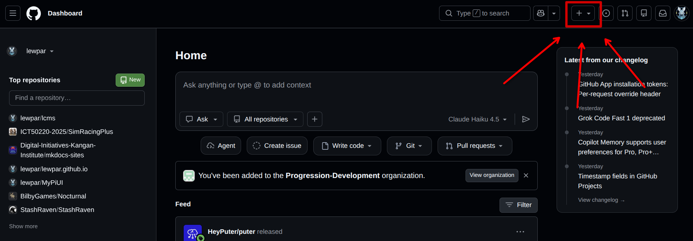
-
Select the
New repositoryoption from the menu that appearsPreview Image - Click to view
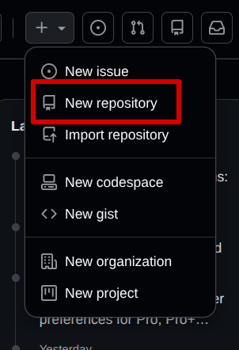
-
Fill in the repository form You need to give your repository a name and enable the
Add READMEoption.Warning
It is important that you enable the
Add READMEoption, otherwise you will not be able to upload files.Preview Image - Click to view
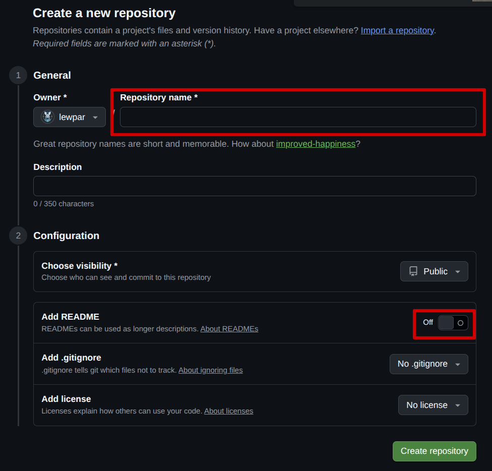
-
If you have followed these steps correctly you should see a repository with a single file in it called
README.md:Preview Image - Click to view
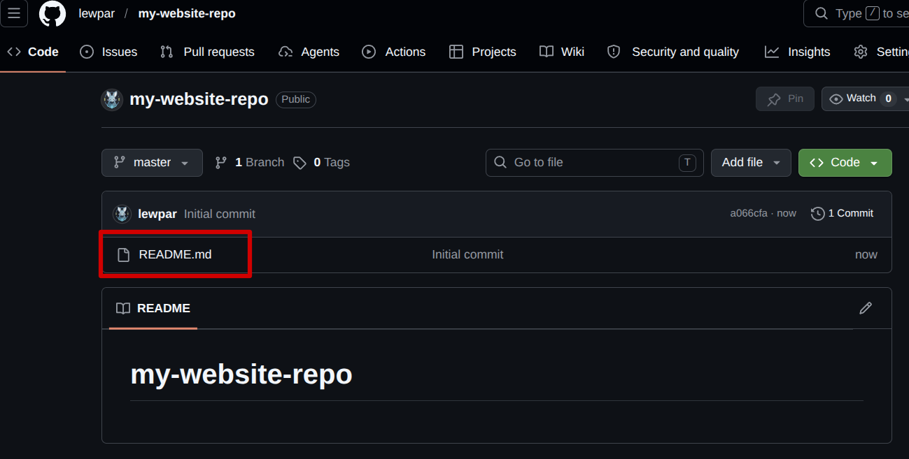
9.2 Uploading Site Files
Instructions
-
Click the
Add filebuttonPreview Image - Click to view
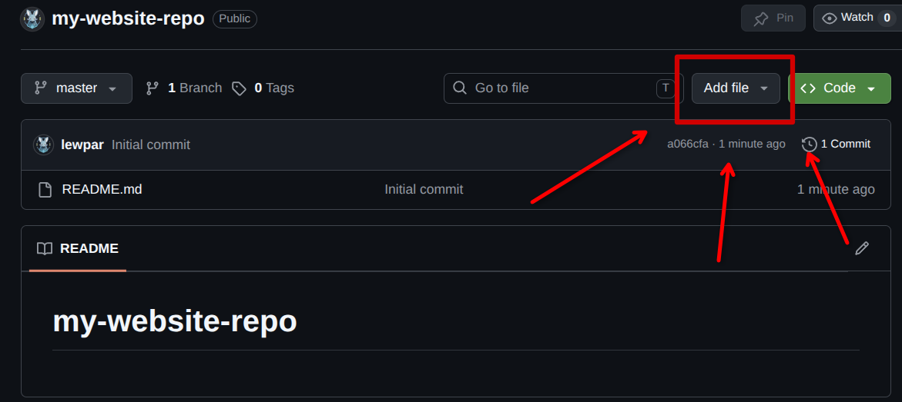
-
Select the
Upload filesoptionPreview Image - Click to view
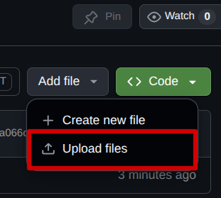
-
Click the
choose your fileslinkPreview Image - Click to view
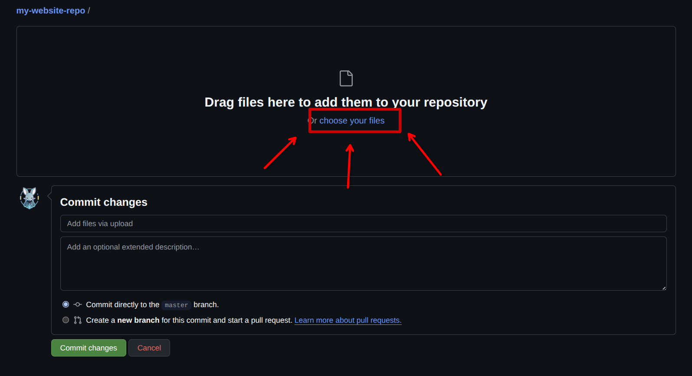
-
Select the website files you have created in a previous activity Select any
index.htmland otherhtmlfiles you created in a previous activity and click theopenbutton. !!! This probably needs a screenshot !!! -
Click the
Commit changesbutton to upload the filesPreview Image - Click to view
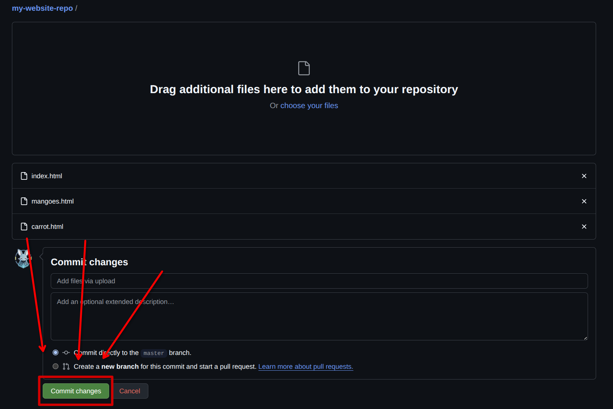
-
If you have done these steps correctly you should see your files uploaded to your repository:
Preview Image - Click to view
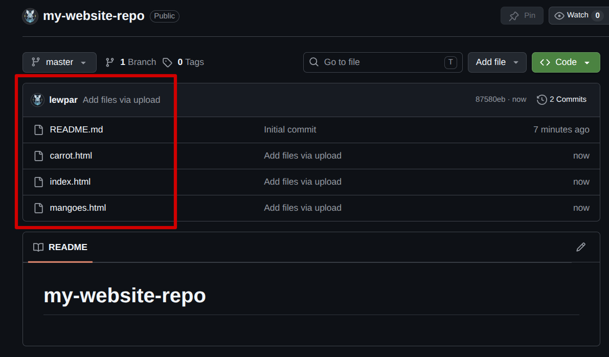
9.3 Deploying to GitHub Pages
Instructions
-
Click on the
Settingstab in the navigation barPreview Image - Click to view
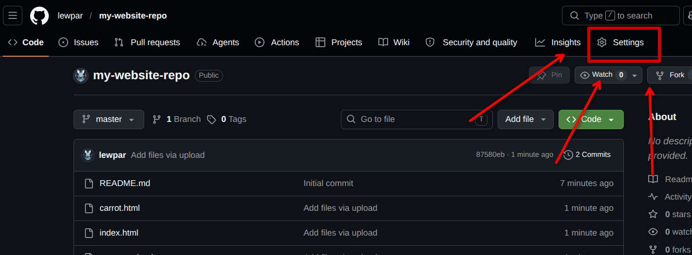
-
Click on the
Pagestab in the sidebar navigationPreview Image - Click to view
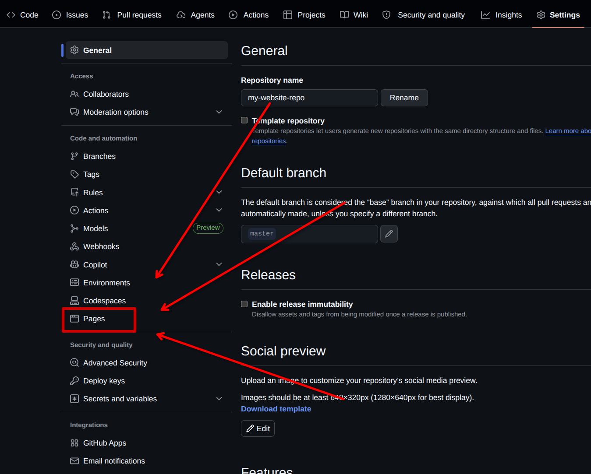
-
Click on the
Branchdrop-down menuPreview Image - Click to view
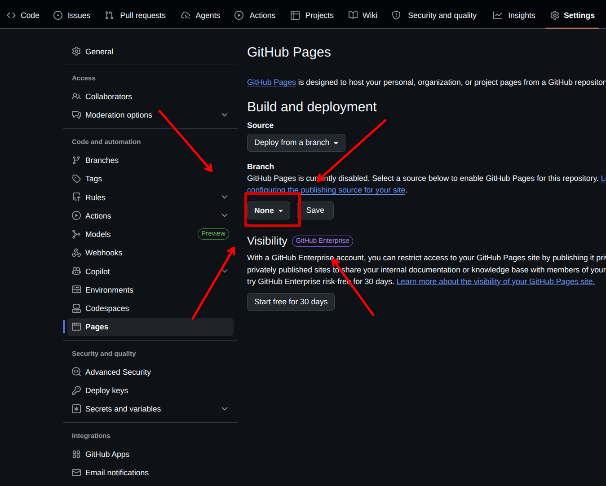
-
Select the
mainbranchPreview Image - Click to view
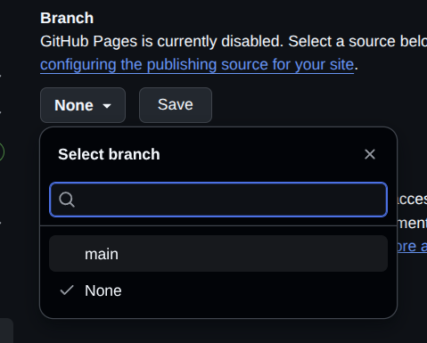
-
Click on the
SavebuttonPreview Image - Click to view
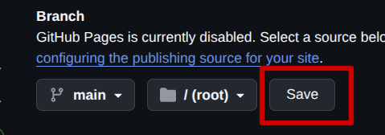
9.4 Viewing your Deployed Website
Instructions
-
Click on the
Actionstab in the navigation barPreview Image - Click to view
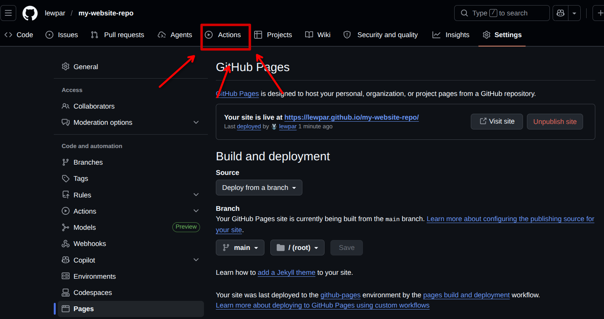
-
Wait for the action to complete You will need to wait for the website to be deployed by GitHub, you will know when it is complete when the action changes from orange to green.
Preview Image - Click to view
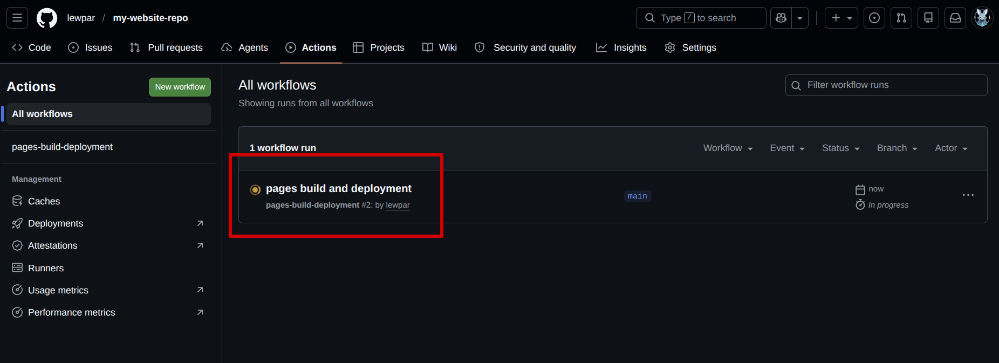
Preview Image - Click to view
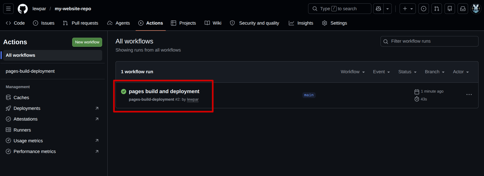
-
Click on the action name This will take you to the completed action (the GitHub deployment)
Preview Image - Click to view
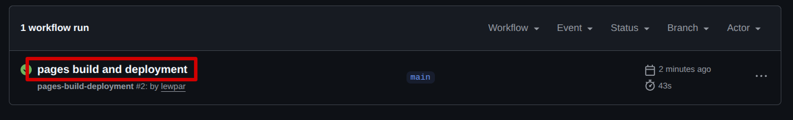
-
Click on your deployed pages link
Preview Image - Click to view
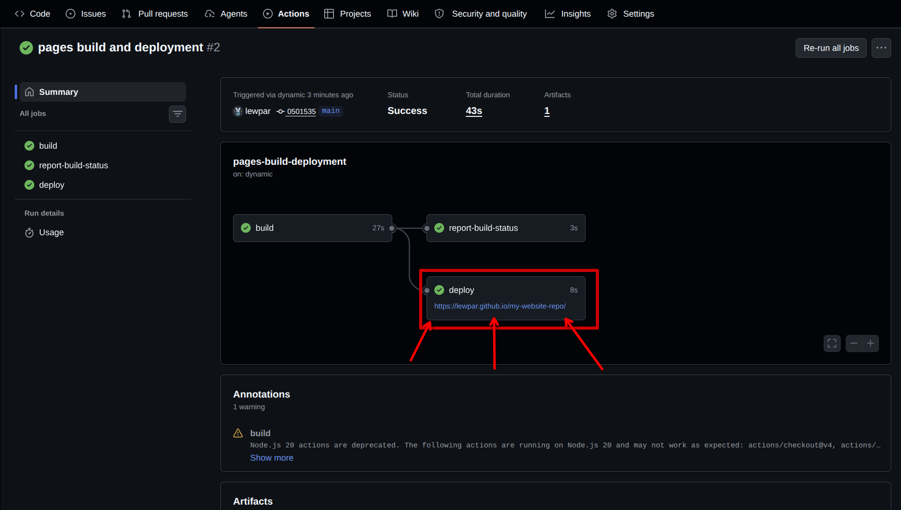
-
If you have done the steps correctly you should see the website that you made in a previous activity show up (your website may look different to mine):
Preview Image - Click to view
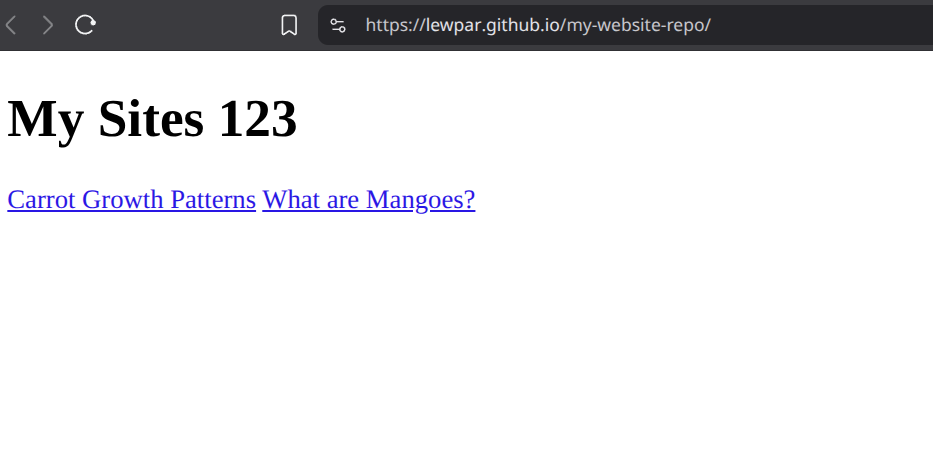
If you do see your website then your site is now live and you can share your website link with your peers and visit it from any computer / network with an internet connection.
9.5 Troubleshooting
If you are experiencing issues with your deployed GitHub Pages website, refer to the frequently asked questions below for help:
I only see the name of my repository with an empty site If your website looks like the following after deploying your site and opening the link, then you have not correctly setup your index file:
Preview Image - Click to view
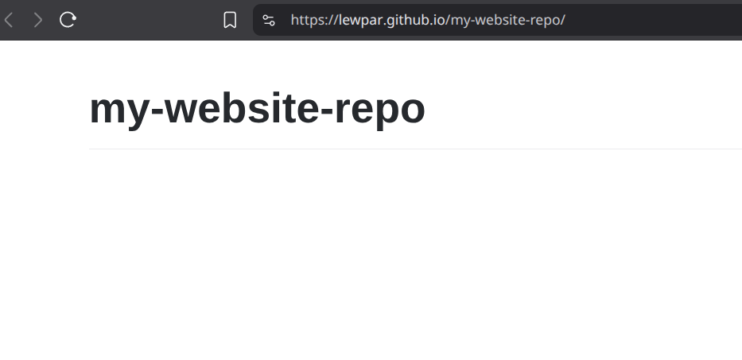
Make sure you have a html file in your repository named index.html. If you do not have this file, then the web browser does not know how to get to your page.
Remember: Web browser look for the index.html file by default when you do not specify a page in the address bar.